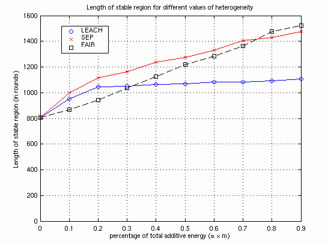

SEP: A Stable
Election Protocol for clustered
heterogeneous wireless sensor networks
Overview
We study the impact of heterogeneity of nodes,
in terms of their energy, in wireless sensor networks that are hierarchically
clustered. We assume that a percentage of the population of sensor nodes
is equipped with additional energy resources - this is a source of heterogeneity
which may result from the initial setting or as the operation of the network
evolves. We show that the behavior of such sensor networks becomes very
unstable once the first node dies, especially in the presence of node heterogeneity.
Classical clustering protocols assume that all the nodes are equipped with the
same amount of energy and as a result, they can not take full advantage of the
presence of node heterogeneity.
Main Idea
We propose SEP, a heterogeneous-aware
protocol to prolong the time interval before the death of the first node (we
refer to as stability period), which is crucial for many applications where
the feedback from the sensor network must be reliable. SEP is based on
weighted election probabilities of each node to become cluster head according
to the remaining energy in each node.
Main Results
We show by simulation that SEP always prolongs the stability period compared
to (and that the average throughput is greater than) the one obtained using
current clustering protocols. Our main contributions are:
Our SEP protocol successfully extends the stable
region by being aware of heterogeneity through assigning probabilities of
cluster-head election weighted by the relative initial energy of nodes.
Due to extended stability, the throughput
of SEP is also higher than that of current (heterogeneous-oblivious)
clustering protocols.
The performance of SEP is observed to be close to
that of an ideal upper bound obtained by distributing the additional energy
of advanced nodes uniformly over all nodes in the sensor field.
SEP is more resilient than LEACH in judiciously
consuming the extra energy of advanced nodes - SEP yields longer stability
region for higher values of extra energy.

Documentation:
"SEP: A Stable Election Protocol for clustered heterogeneous wireless sensor networks"
Georgios Smaragdakis, Ibrahim Matta and Azer Bestavros.
Second International Workshop on
Sensor and Actor Network Protocols and Applications (SANPA 2004).